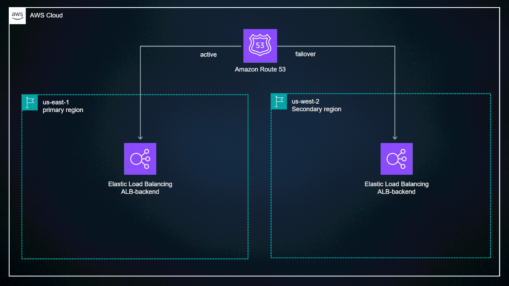
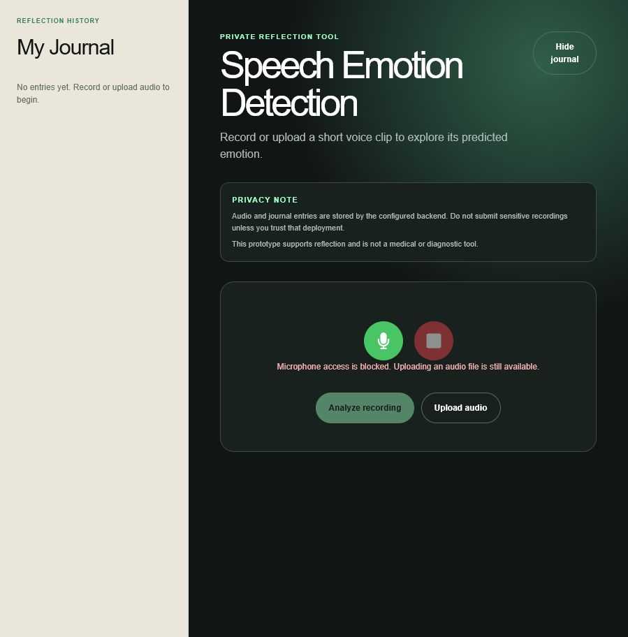

01 / Backend
Backend & Distributed Systems
Build APIs, Kafka/gRPC services, async workflows, and fault-tolerant systems that stay reliable under load.
+25%throughput improvement
Software Engineering · Machine Learning · Distributed Systems
I'm Karan, a software engineer based in New York with strong machine learning experience. My work spans distributed services, cloud infrastructure, large-scale data pipelines, and applied ML systems.
Core strengths
I am strongest where backend systems, data infrastructure, and machine learning have to work together in production.
01 / Backend
Build APIs, Kafka/gRPC services, async workflows, and fault-tolerant systems that stay reliable under load.
02 / Data & Cloud
Design large-scale data pipelines, cloud infrastructure, Kubernetes deployments, and automated delivery workflows.
03 / ML Products
Develop NLP, predictive modeling, retrieval, and real-time inference systems that become usable products.
Experience
Production engineering at Meta, distributed systems research, applied ML, and graduate-level teaching.


Meta / Instagram
Aug 2023 - Jun 2024Engineering / Data Systems
Built Instagram's first cohort-analysis pipeline and behavioral clustering framework at billion-user scale.
Research / Distributed Systems
Building reliable distributed services, communication pipelines, and deployment workflows for scalable multi-node systems.
Research / Persuasion Modeling
Studied preference-aligned language models and persuasive signals using large-scale discussion data and human evaluation.
Teaching / Distributed Systems
Taught distributed systems concepts and guided students through reliability, debugging, and performance trade-offs.
Featured projects
Five projects showing how I move from a technical problem to a measurable, production-ready system.
01 / Cloud application
Source available
Failover architectureFull-stack engineering / Three-tier architecture
Full-stack CRUD application separating a React presentation layer, Node.js REST API, and MySQL data layer for AWS deployment.
03 / Risk intelligence
Live MVPPredictive modeling / Intervention analysis
Reproducible risk-ranking system that benchmarks three models on 20K synthetic longitudinal records, then deploys the measured temporal-holdout champion.
02 / Multimodal product
Case study
Real product UIDeep learning / Real-time inference
Full-stack mental-health journaling application that records or uploads speech, predicts emotion with confidence, and saves editable audio journal entries.
04 / Retrieval systems
Live prototypeHybrid retrieval / Grounded generation
A recruiter-facing assistant that answers questions about my experience, skills, projects, and measurable impact using cited portfolio evidence.
05 / Explainable NLP product
Live MVPInformation retrieval / Product analytics
An upload-first resume improvement workspace with target-role scoring, ATS checks, evidence-safe bullet rewrites, and before-and-after comparison.
Ask about my work
Ask recruiter-style questions and get answers grounded in my resume, experience, projects, and technical skills.
Ask about Karan
No conversation yet. Ask a recruiter question to begin.
Retrieval trace
How it works
experience, projects, skills, resume
when evidence is insufficient
ranked evidence for every answer
Live evaluation suite
Technical toolkit
A practical toolkit built across distributed systems, billion-scale engineering, applied ML research, and end-to-end product development.
Model intelligence
Training, fine-tuning, and evaluating modern deep learning and NLP systems.
Engineering foundation
Choosing the right language for models, services, large-scale data, and product interfaces.
Production lifecycle
Deploying reliable services, tracking experiments, and improving systems after launch.
Systems and data
Building APIs, data pipelines, distributed jobs, and dependable persistence layers.
Education
Graduate study focused on machine learning, deep learning, natural language processing, distributed systems, and advanced algorithms.
Master of Science
Bachelor of Engineering
Visvesvaraya Technological University
Let's build something useful
I'm interested in software and machine learning engineering opportunities where scalable systems and intelligent products create real-world impact.
Direct contact
Emailkaran.dee2905@gmail.com↗ Phone(631) 371-2656↗